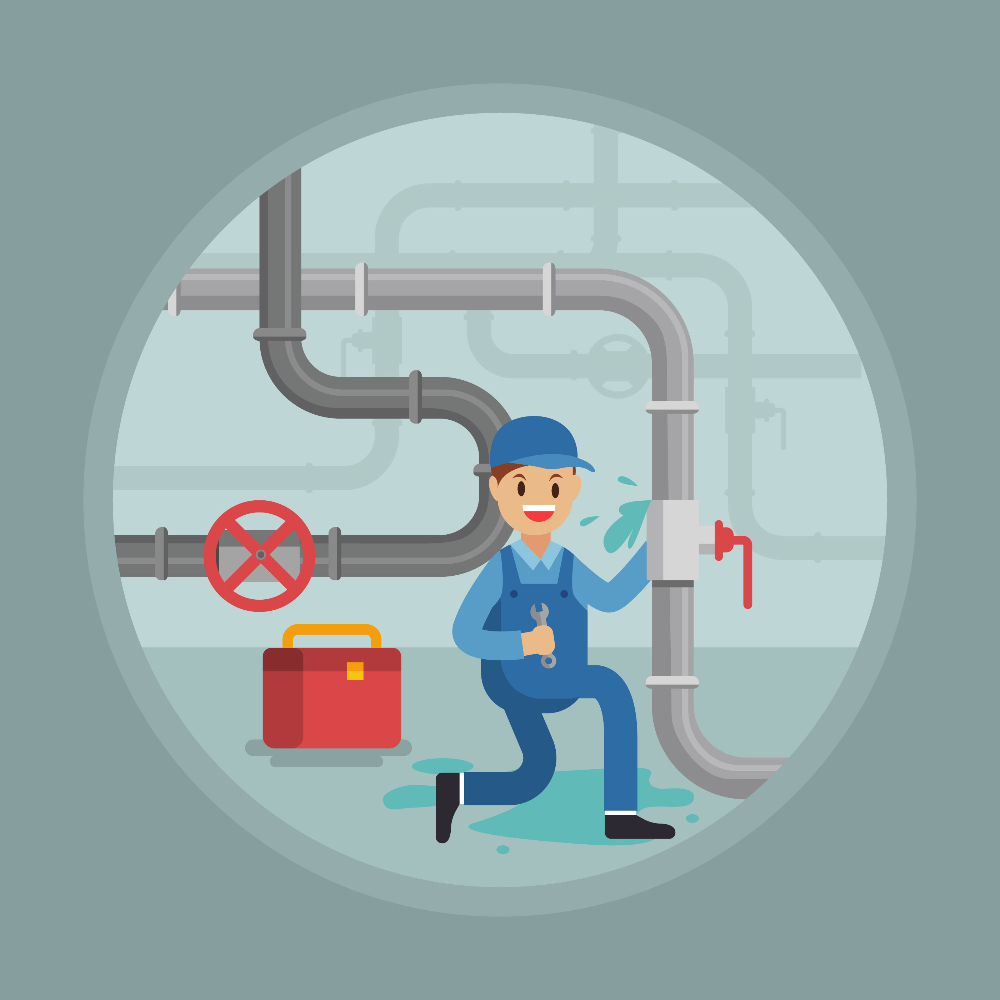

Where Is Change Stuck
- Change model focus - Awareness (Need for change),Belief (Personal motivation), Skill/Will (Learn how to implement the change.), Execution (Ablity to use the necessary skills and behaviors.), Verify/Inspect (Sustaining the change to prevent regression.)
- Effective Meetings -Leave lasting Impressions by utilizing branch tools, ecosystem and BM DNA.
- Empowering Environment - Empower team to bring up concerns/questions.
What am I Accepting
- Branch Tools - Drive tool adoption through live coaching and weekly usage reviews.
- Collaboration - Foster role to role alignment by encouraging daily collaboration and shared cient ownership
- Dials - Standardize Outbound/Inbound call discipline by utilizing POTD to review Successes and challenges throughout the day.
What am I celebrating
- Banker Scheduled Meetings - We've seen a clear upward trend in banker-initiated client meetings, showing stronger proactive engagement.
- OSAT - Our client satisfaction scores have risen, reflecting the team's commitment to delivering excellent service. while climbing to the top of the 90s club.
- Client Deepening - DNTs are demonstrating a solid understanding of our clients' needs, leading to more personalized and impactful interactions.
STOP & Check for Leaks

- Intention - What is the intention behind each transaction? Reinforce purposeful engagement by challenging the "why" behind client interaction.
- Ecosystem - Recalibrate as needed around the ecosystem. Tools and routines must align with our branch mission.
- Empowerment - Is the enviroment psychologically safe and Am I supporting an inclusive environment. Leave lasting impressions by encouraging team to share sucesses and challenges.
Vision & Impact
- Lead by example - Incorporate the BM DNA (Huddle, POTD, BMI, Observe and Coach) set the tone for the team.
- Branch Manager Observations - Conduct observations to assess and elevate the integration of core tools (Tablet, Branch Queue, DNT) into daily behaviors. Have end of day Meetings with RB's & PCB's to discuss successes and areas of improvement.
- Empowerment - Inspire confidence in every team member to raise ideas and concerns, nurturing a culture of trust, openness, and shared accountability."
This isn't a one-size-fits-all plan — it's a guide designed to help you discover what drives your team, and lead with purpose.
"It's not about fixing problems; it's about raising our floor and ceiling at the same time."
- Ian Andujar